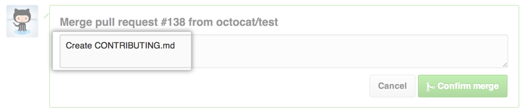

Merge a pull request into the upstream branch when work is completed. Anyone with push access to the repository can complete the merge.
If you decide you don't want the changes in your branch to be merged to the upstream branch, you can also close the pull request without merging.
Merging a pull request using the GitHub web interface
If the merge will not have any conflicts, you can merge the pull request online.
Tip: The pull request page on GitHub includes custom instructions for manually merging a pull request on the command line. You can use these instructions if your pull request can't be merged online, or if you'd like to test your changes locally before merging. These instructions can be found near the Merge pull request button.
- In any repository's right sidebar, click Pull Requests.

- In the "Pull Requests" list, click the pull request you'd like to merge.
- Click Merge pull request.
- Type a commit message, or accept the default message. 
- Under the commit message box, click Confirm merge.

- Optionally, delete the branch. This keeps the list of branches in your repository tidy.
Pull requests are merged using the --no-ff option.
Further reading
- "Reverting a pull request"
- "Merging branches" using GitHub for Mac